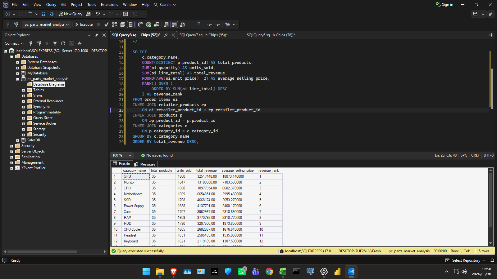

PC Parts Market Intelligence
A retail pricing and market analysis project for computer hardware data.
This project consolidates product, retailer, pricing, inventory, sales, and customer records into a reporting framework for price comparison, category performance, supplier analysis, and market visibility.
Project Overview
This project addresses the difficulty of comparing computer hardware pricing and stock availability when product listings, retailer records, pricing history, orders, and customer activity sit in separate datasets.
The analysis starts with a relational SQL model and ends with Excel reporting outputs that show category performance, pricing differences, stock risk, retailer performance, and customer purchasing patterns.
The business outcome is a reusable market intelligence workflow that supports pricing insight, inventory monitoring, competitive comparison, and reporting for retail decision making.
Business Challenge
Without consolidated data, it is difficult to answer basic retail questions: which categories perform best, where prices differ, which products have stock risk, and how customer segments behave across orders.
The manual process would require checking separate product, listing, order, retailer, and stock records before any pricing or performance conclusion could be made.
Data Sources
The project uses structured retail records covering products, categories, brands, retailers, suppliers, product listings, price history, customers, orders, reviews, and build guide information.
These records make it possible to connect pricing, inventory, sales, and customer behavior in one analytical model.
Data Processing and Analysis
I designed a relational SQL Server database, structured the data into connected tables, and wrote analytical SQL queries using joins, aggregations, and category comparisons.
The SQL outputs were used in Excel to build dashboard views for price comparison, category performance, retailer benchmarking, inventory risk, and sales analysis.
Tools and Technologies
SQL Server Management Studio, T SQL, Excel, pivot style analysis, dashboard design, data modeling, business intelligence, data visualization.
Reporting and Insights
- GPU and monitor categories generated the strongest revenue.
- Pricing varied noticeably between retailers and provinces.
- Inventory risk appeared in low stock and out of stock listings.
- Customer segment analysis helped reveal different purchasing behaviors.
- Retailer benchmarking made it easier to compare revenue, stock, and pricing performance.
Screenshot Gallery





Business Outcome
The project helps decision makers compare prices, monitor stock risk, benchmark retailers, understand customer demand, and identify where pricing or inventory strategy needs attention. It turns scattered product and transaction records into a usable market intelligence reporting workflow.
Key Analytical Capabilities
This project demonstrates relational database design, SQL joins and aggregations, window functions, data modeling, Excel dashboard reporting, pricing analysis, inventory analysis, customer analysis, and business storytelling.
Back to Projects